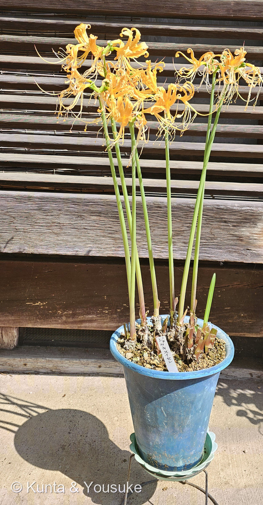
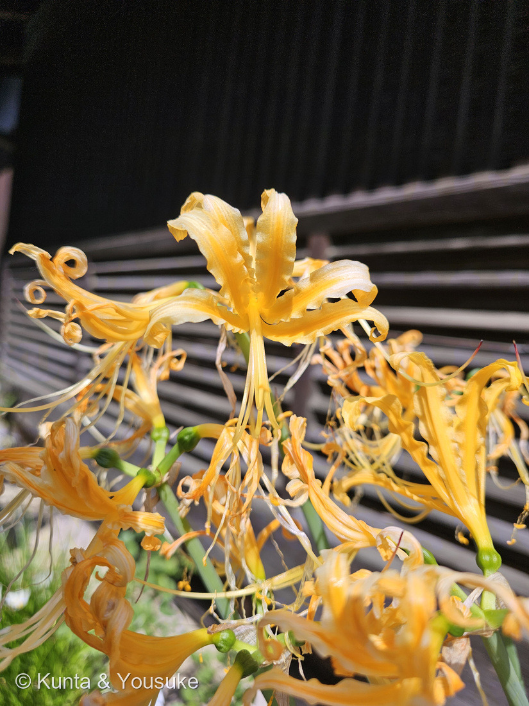

地図を読み込んでいるよ…
🔍 写真も地図も、押しているあいだ拡大して見られるよ（スマホは指を置いてすこし待ってね）。
🌍 の地図＝この子がもともと自生している場所を緑に。四国・九州・南西諸島・台湾の在来種で、海岸の岩場や林のふちに生える。⚠Lycoris aurea として広くとらえると、中国から東南アジア・南アジアまでふくまれる。くわしくは下の地図の説明を見てね。
⭐四国・九州・南西諸島と台湾の在来種で、海岸の岩場や石灰岩地の林のふちに生えるよ（Wikipedia・林野庁）。⚠県まるごと緑になるけれど、ほんとうは岩場や林のふちだけ。⚠林野庁の資料は「中国南部」も入れている。また、Lycoris aurea として広くとらえると、中国から東南アジア・南アジアまで入る（三河の植物観察）＝⭐この図鑑では、日本と台湾のものを L. traubii に分ける考えかたで、日本と台湾だけを塗った。⭐この鉢の株は、だれかが育てているものだよ。
⚠ 地図は国（日本と中国だけ県・省）までしか塗れないから、ほんとうの分布より広く見えていることがあるよ。地図はだいたいの場所。正確なところは、上の文を見てね。
ショウキズイセン（鍾馗水仙）
Lycoris traubii W.Hayw.
別名 · 鍾馗蘭（しょうきらん）／英名 golden spider lily・yellow spider lily／⚠Lycoris aurea として扱われることもある
ヒガンバナ科 · Amaryllidaceae（ヒガンバナ属 Lycoris · キジカクシ目 Asparagales）── ⭐173 ヒガンバナ・174 シロバナマンジュシャゲ・084 キツネノカミソリと同じヒガンバナ属
燻太さんの言葉「ヒガンバナそっくりの見た目だけど、花色は綺麗なオレンジ色。この子は果実をつけるのかな？」── ⭐つけるよ。そして、174 シロバナマンジュシャゲの「もうひとりの親」
⭐⭐⭐ 名前と学名の由来 ── 鍾馗さんと、トラウブさん
- ⭐ 属名 Lycoris（リコリス）は、173 ヒガンバナと同じ＝ギリシャ神話の海の精リュコーリアスから。⭐名前のお話は 173 にあるよ。
- ⭐⭐ 種小名 traubii＝「トラウブさんの」。⭐語尾の -ii は、人の名前につけて「〜さんの」にする形。⭐トラウブ（Hamilton P. Traub・1890〜1983）は、ヒガンバナ科を専門にしたアメリカの植物学者（Meso.cloud）。⭐名前を発表したのはヘイワード（W. Hayward）で、1957年の雑誌『Plant Life』13巻41ページ（IPNI）。⚠トラウブさんにささげた理由を書いたもとの文は、ぼくはまだ読めていない。
- ⭐⭐ 和名の「鍾馗（しょうき）」は、疫病をはらい、魔をよける中国の神さま。⚠⚠でも、なぜこの花に鍾馗さんの名前がついたのかは、読めた出典のどこにも書いていなかった。⭐分からないまま、ここに置いておくね。
- ⭐ 「水仙」とついているけれど、スイセン属ではなく、ヒガンバナ属。⭐174のおまけのナツズイセン（夏水仙）も、同じヒガンバナ属だよ。
- ⭐ 鉢の名札は手書きで「ジョウキスイセン」。⭐「ショウキ」の点々がずれたのかな。でも、だれのことを書いた札かは、ちゃんと分かったよ。
⭐⭐⭐ この植物のこと ── 南の海べの、黄色いヒガンバナ
- ⭐⭐ 日本では四国・九州・南西諸島と台湾に生える在来種＝おもに石灰岩地の岩場や林のふち（Wikipedia）。林野庁の西表森林生態系保全センターは「海岸の岩場や山野に生える多年生の草本」と書いている。
- ⭐ 花は8〜11月（おもに9〜10月）。花茎は30〜60cm（三河の植物観察）。⭐10月17日の写真①は、まさにそのころ。
- ⭐⭐ 花は花被片が強く反りかえって、ふちが強く波打つ。長さ約6cm、幅0.4〜1cm（三河の植物観察）。⭐写真②のくしゃくしゃのふちが、それだよ。
- ⭐⭐ 花のころに葉は無く、花のあとに厚みのある葉を出す（Wikipedia）。⭐三河の植物観察は「葉は秋に出る」「剣形で長さ約60cm、幅1.7〜2.5cm」と書いている。⭐写真①の鉢の右のほうに、まっすぐな緑の葉が1枚と、赤むらさきの芽が見える＝⚠これが出はじめた葉なのか、ぼくには決めきれない（宿題②）。
- ⚠⚠ 有毒植物（Wikipedia）。⭐173 ヒガンバナと同じなかまだから、球根をさわったら手を洗ってね。
- ⭐ 英語では golden spider lily（金色のクモのユリ）。⭐長い雄しべを、クモの脚に見立てた名前だね（⚠名前の由来を書いた出典は見ていない・ぼくの読み）。
⚠ 同定について ── 黄色いヒガンバナは、この子
- ⭐⭐⭐ まず、ヒガンバナ属で決まり＝花茎だけが立って、先に花がかたまって咲く／花被片6枚が強く反りかえり、ふちが波打つ／雄しべが長く突き出る（写真①②）。
- ⭐⭐⭐ 色と雌しべの先がショウキズイセンに合う＝三河の植物観察「花被は黄色」「花糸は黄色」「花柱は先端がローズレッド色」。⭐写真②の花は橙がかった黄色で、雌しべの先だけが赤い。⭐手書きの名札も「ジョウキスイセン」。
- ⭐⭐ 173 ヒガンバナではない＝花は明るい朱赤色（173 のページ）。
- ⭐⭐ 174 シロバナマンジュシャゲではない＝クリーム色〜白で、内がわに少しピンクの縞（174 のページ）。
- ⭐⭐ 084 キツネノカミソリではない＝同じ橙色でも、花被は反りかえらず、雄しべも突き出ない（173 のページ）。⭐写真②は強く反りかえっている。
- ⚠ まだ落としきれていないこと＝この子は鉢植えの栽培品なので、ヒガンバナ属の黄色い園芸の交雑品だったら、写真だけでは見分けられない。⭐名札と、出典の形にぜんぶ合うので、ショウキズイセンとして登録したよ。
⭐⭐⭐⭐ 燻太さんの「この子は果実をつけるのかな？」── つけるよ
- ⭐⭐⭐ 燻太さんの問い＝「ヒガンバナそっくりの見た目だけど、花色は綺麗なオレンジ色。この子は果実をつけるのかな？」
- ⭐⭐⭐⭐ 答え＝つける。⭐Wikipedia は「本種は結実する」と、173 ヒガンバナとのちがいとして書いている。
- ⭐⭐⭐ 実のすがた＝3つの稜のある蒴果で、背中がわで裂ける。種は少なく、黒くてほぼ球形、直径約7mm（三河の植物観察）。
- ⭐⭐⭐ 173 ヒガンバナは、日本のものは三倍体で種ができない（173 のページ）。⭐ショウキズイセンの染色体の数は、日本のもので 2n=12, 13, 14（三河の植物観察）。⭐ヒガンバナのように「3組ずつ」になっていないから、種をつくれるんだと思う（⚠数と稔性をむすびつけたのは、ぼくの読み）。
- ⭐⭐ 写真②の下のほうを見て＝しおれた花の根もとに、まるくて緑の玉がいくつもある。⭐ヒガンバナのなかまは、花びらの下に子房がある（子房下位）。⭐この玉がふくらんで3つの稜が見えてきたら、実になった合図だよ（宿題①）。
- ⚠ ただし鉢の株は1つだけかもしれない。⚠同じ株の花どうしで実ができるかは、読めた出典に書いていなかった。
⭐⭐⭐ 燻太さんの「先が赤いのは雌しべかな？」── 当たり
- ⭐⭐⭐ 燻太さんの問い＝「上向きにカールして、先端付近で赤色のグラデーションになっているのは、雌しべかな。」
- ⭐⭐⭐⭐ 当たりだよ。⭐三河の植物観察に「花柱は先端がローズレッド色」と書いてある。⭐花柱は雌しべの細長いところ。
- ⭐⭐ 雄しべは6本で、雌しべといっしょに上向きの弓なりに曲がる（Wikipedia）。⭐雄しべは長さ7〜12cmで花糸は黄色（三河の植物観察）＝⭐写真②で、先に小さな葯のついた黄色い糸が雄しべ、1本だけ先が赤くなっているのが雌しべ。
- ⭐ 燻太さんの見た「上向きのカール」は、Wikipedia の「上向きに弓状に曲がる」と同じことを言っている。
⭐⭐⭐⭐⭐ 赤と黄色と白 ── 三人そろった
- ⭐⭐⭐ 174 シロバナマンジュシャゲは、173 ヒガンバナ（赤）とショウキズイセン（黄色）の自然交雑種といわれている（三河の植物観察）。
- ⭐⭐⭐⭐ 174 のページで、ぼくはこう書いていた＝「この図鑑には、いま『子』と『親のひとり』がいて、『もうひとりの親』を探しているところ。三人そろったら、この道は完成する。」
- ⭐⭐⭐⭐⭐ その「もうひとりの親」が、この子。⭐173 のおまけとして「探したい」に入れてから、約3か月。町並み保存地区の格子戸の前で、鉢に入って待っていてくれた。
- ⭐⭐ こうして三人ならべると＝赤（173）は三倍体で種ができない／黄色（346）は実をつける／白（174）はそのあいだに生まれた。⚠174 が実をつけるかは、174 のページでも「まだ確かめられていない」のまま。
- ⚠ 「自然交雑種といわれている」の書きぶりのまま受けとってね。断定されているわけではないよ。
⏳ 宿題 ── 3つ
- ⏳⭐⭐⭐ ①実ができるか＝写真②のしおれた花の下の緑の子房が、ふくらんで3つの稜のある実になるか／割れて黒い種（直径約7mm）が出るか（燻太さんの「この子は果実をつけるのかな？」）。⚠よそのお家の鉢なので、さわらずに見るだけ。
- ⏳⭐⭐ ②花のあとに出る葉＝幅の広い剣の形で、長さ約60cm（三河の植物観察）＝写真①の緑の1枚がそれか。
- ⏳⭐ ③おまけのナツズイセン＝174のおまけとして待っている、淡紅色の花。
参考：三河の植物観察「ショウキズイセン」（Lycoris aurea (L'Her.) Herb.／Lycoris traubii W.Hayw.・日本と台湾のものを L. traubii に分ける説・2n=12～16（FOC）・2n=12, 13, 14（日本産）・花期8～11月（主に9～10月）・花被は黄色・裂片は強く反り返り、倒披針形、長さ約6cm、幅0.4～1cm、縁は強く波打つ・雄しべは長さ7～12cm・花糸は黄色・花柱は先端がローズレッド色・蒴果は3稜、背面で裂開・種子は少数、黒色、類球形、径約7mm・葉は秋に出る・剣形、長さ約60cm、幅1.7～2.5cm・花茎は30～60cm）／Wikipedia「ショウキズイセン」（Lycoris traubii・四国、九州、南西諸島、台湾・主に石灰岩地の岩場や林縁・花期に葉は無く、開花後に厚みのある葉を出す・雄しべは6本で雌しべとともに上向きに弓状に曲がる・本種は結実する・種子は黒色で径7mm・有毒植物）／林野庁 西表森林生態系保全センター「ショウキズイセン」（四国、九州、沖縄、中国南部、台湾・海岸の岩場や山野に生える多年生の草本・葉は長さ30-60cm、幅20-25mm・花の茎は高さ60cm程度・実は蒴果）／IPNI「Lycoris traubii W.Hayw.」（Pl. Life (Stanford) 13: 41. 1957）／Meso.cloud「Hamilton Paul Traub」（1890年6月18日〜1983年7月14日・American botanist・specialized in the study of Amaryllidaceae）